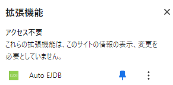

Auto EJDB
EJDBとは
EJDBは，京都大学が提供する電子ジャーナル・データベース認証システム (E-Journal and Database Authentication System) のことです。
多くの学術論文は閲覧時にびっくりするような購読料を要求されます。 (例えば，Chrome ウェブストアの画像として貼っている論文はPDFダウンロードに59 USD必要です。) 論文1本ごとにこんな額を払っていては話にならないため，京都大学では大学全体として購読契約を行っています。 本認証システムは，京都大学の契約に基づいたアクセスであることを認証するシステムです。
なぜAuto EJDBが必要なのか
EJDBでは電子ジャーナルへのアクセス時にプロキシサーバ(Proxy=代理人)を経由することで認証を行っています。 この方法では学外からもアクセス可能であるという利点がある一方で，ページごとにプロキシサーバへの転送をユーザが行う必要があります。
Auto EJDBは，ページごとの認証作業を(ほぼ)自動化するための拡張機能です。
使い方
初回同意について
EJDB(本拡張機能ではなく認証システム)の利用開始前に 初回同意 が必要になります。 (ブックマークレットの設定は不要です。)

拡張機能をツールバーに固定しておくとより便利に利用することができます。 認証したいページで拡張機能アイコンをクリックすると，自動的に認証システムを経由してアクセスすることができます。
電子ジャーナルの判定
以下のページは電子ジャーナルであると判定され，自動的に認証システムを経由するようになります。
- DOIで指定されたページ (
https://doi.org/...) - 代表的な論文検索サービスからアクセスされたページ
- 拡張機能アイコンを通して認証したことがあるジャーナル
注意事項
- この拡張機能は京都大学非公認です。 利用に当たっては公式の情報もご確認ください。
- 電子ジャーナルへの過剰なアクセスは絶対にしないでください。 不正なリクエストとみなされた場合には，京都大学の契約が打ち切られる可能性があります。
- 短期IDのみが発行されている場合は使用しないでください。 本拡張機能を利用すると，認証時に自動的にECS-ID/SPS-IDが選択されます。